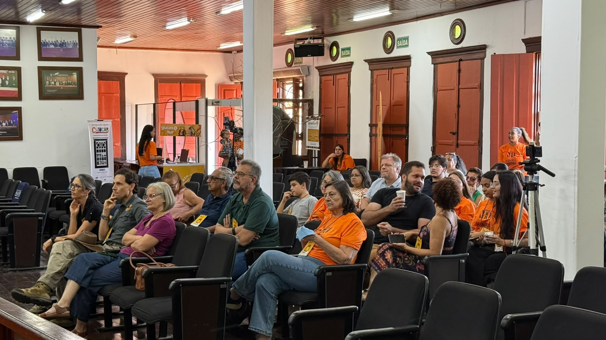

Foto: III Seminário de Economia da Cultura de Paracatu → img/fotos/iii-seminario-de-economia-da-cultura-de-paracatu.jpg
Realização · setembro de 2026
III Seminário de Economia da Cultura de Paracatu
Com o tema Olhares para o Futuro, o seminário discutiu o papel da cultura diante da emergência climática e da geração de trabalho e renda.
Ler mais →